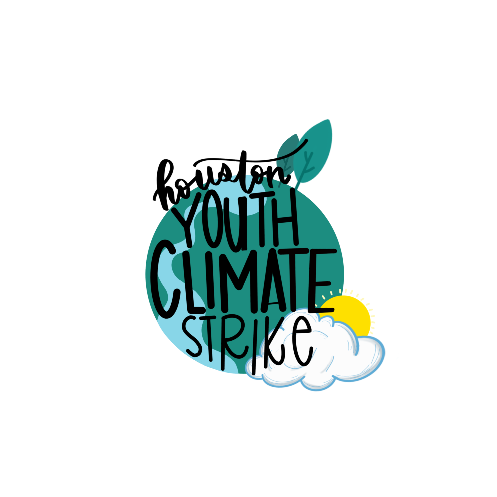

SPACE CITY YOUTH ALLIANCE
A New Frontier In Houston Organizing
Nationally, Sunrise has built hundreds of hubs and recruited thousands of young organizers across the country. Here in Houston, Sunrise Houston and Houston Youth Climate Strike (HYCS) have held town halls, protested in the streets, and helped elect transformational candidates. Now, on the eve of this pivotal election, we are working to inspire and unite passionate young people across Houston schools and universities as we prepare for a transformational decade of activism and politics.
